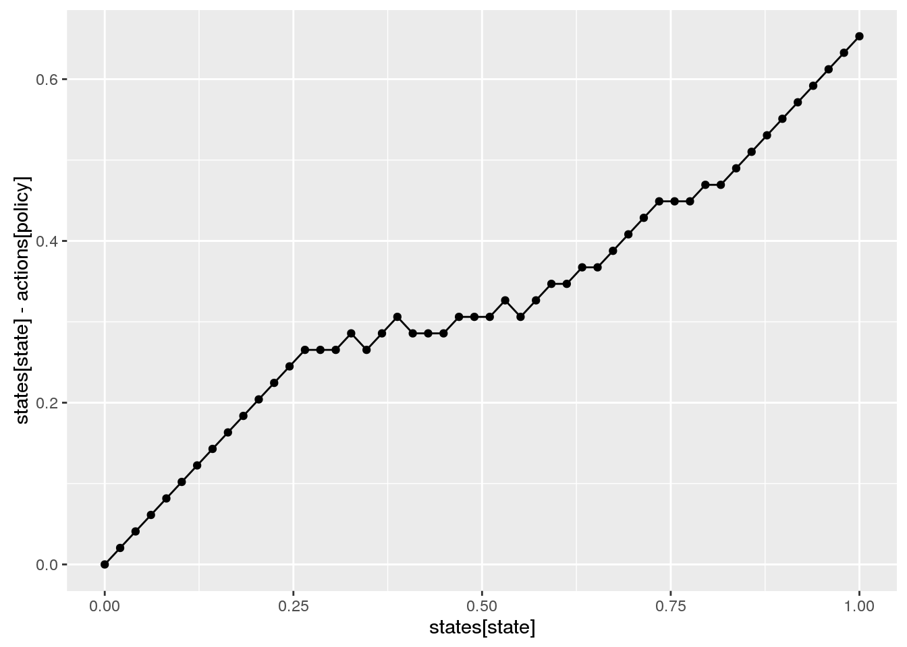
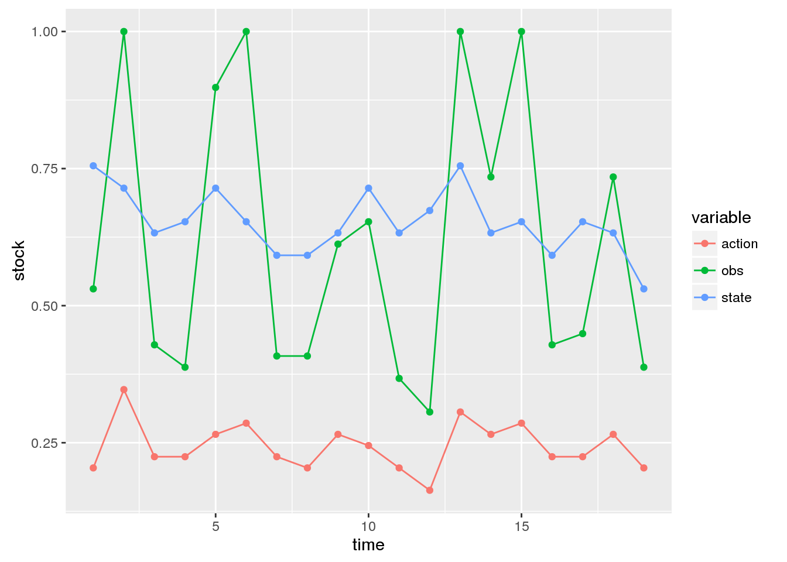

Solving POMDPs with the appl R package
Carl Boettiger
2016-11-20
knitr::opts_chunk$set(fig.width = 7)library(appl)
library(tidyverse) # for plottingParameters specifying our POMDP problem:
states <- seq(0,1, length=50)
actions <- states
observations <- states
sigma_g <- 0.1
sigma_m <- 0.5
reward_fn <- function(x,h) pmin(x,h) # - .001*h
discount <- 0.95
r <- 1
K <- 0.75
f <- function(x, h){
s <- pmax(x - h, 0)
s * exp(r * (1 - s / K) )
}A convenience function for generating transition, observation, and reward matrices given these parameters for the fisheries management problem:
m <- fisheries_matrices(states, actions, observations, reward_fn,
f, sigma_g, sigma_m, noise = "lognormal")Long-running code to actually compute the solution. Rather than run this, we’ll load the solution from the log.
log_data <- data.frame(id = "vignette", model = "ricker",
r = r, K = K, sigma_g = sigma_g, sigma_m = sigma_m)
system.time(
alpha <- sarsop(m$transition, m$observation, m$reward, discount,
precision = .1, log_data = log_data, timeout = 20000)
)appl logs solution files in a specificied directory, along with a metadata table. The metadata table makes it convenient to store multiple solutions in a single directory, and load the desired solution later using it’s id or matching metatata. Read a solution from the log:
log_dir <- system.file("ext-data/vignette-log", package="appl")
meta <- meta_from_log(data.frame(id = "vignette"), log_dir)
alpha <- alphas_from_log(meta, log_dir)[[1]] ## bc fn returns a list with all matching alphas, we need [[1]]Given the model matrices and alpha vectors. Start belief with a uniform prior over states, compute & plot policy:
state_prior = rep(1, length(states)) / length(states) # initial belief
df <- compute_policy(alpha, m$transition, m$observation, m$reward, state_prior)ggplot(df, aes(states[state], states[state] - actions[policy])) + geom_line() + geom_point()
Simulate management under the POMDP policy:
x0 <- which.min(abs(states - K))
Tmax <- 20
sim <- sim_pomdp(m$transition, m$observation, m$reward, discount,
state_prior, x0 = x0, Tmax = Tmax, alpha = alpha)Plot simulation data:
sim$df %>%
select(-value) %>%
mutate(state = states[state], action = actions[action], obs = observations[obs]) %>%
gather(variable, stock, -time) %>%
ggplot(aes(time, stock, color = variable)) + geom_line() + geom_point()
Plot belief evolution:
sim$state_posterior %>%
data.frame(time = 1:Tmax) %>%
filter(time %in% seq(1,Tmax, by = 2)) %>%
gather(state, probability, -time, factor_key =TRUE) %>%
mutate(state = as.numeric(state)) %>%
ggplot(aes(state, probability, group = time, alpha = time)) + geom_line()